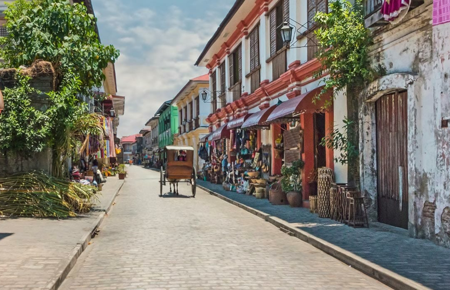
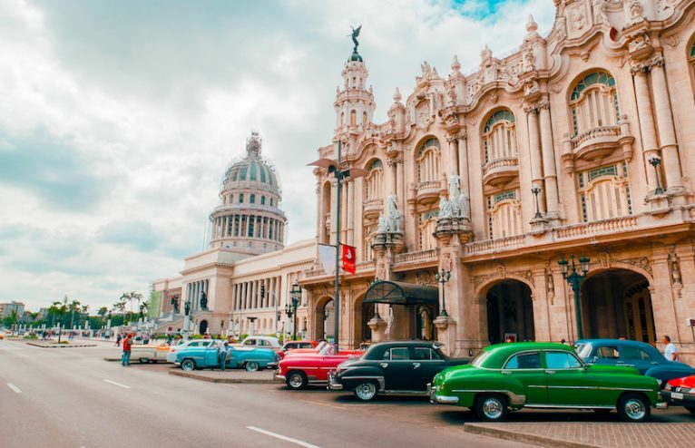
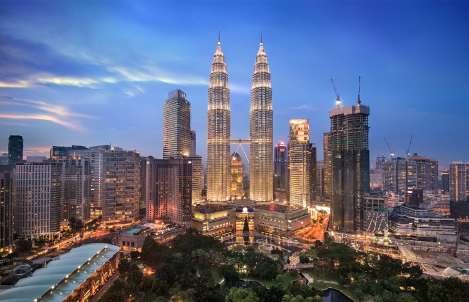
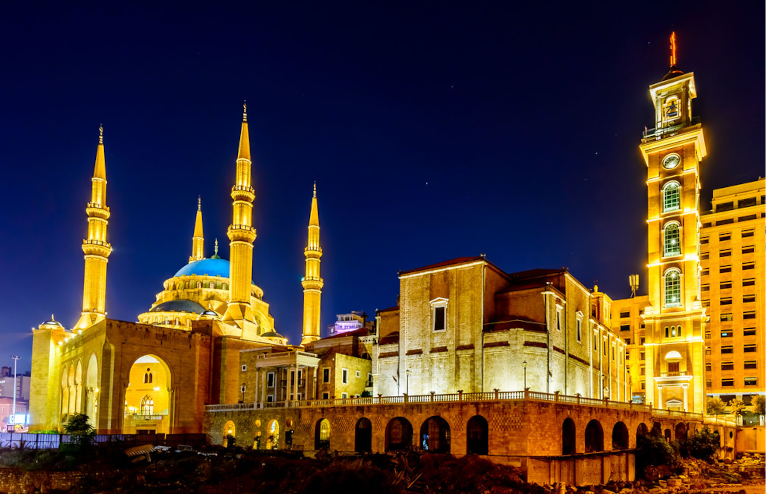
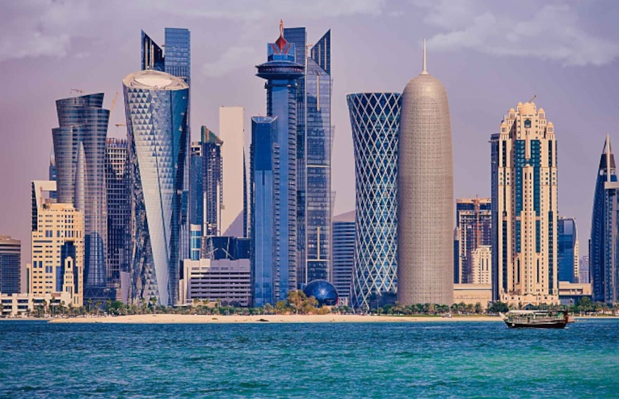
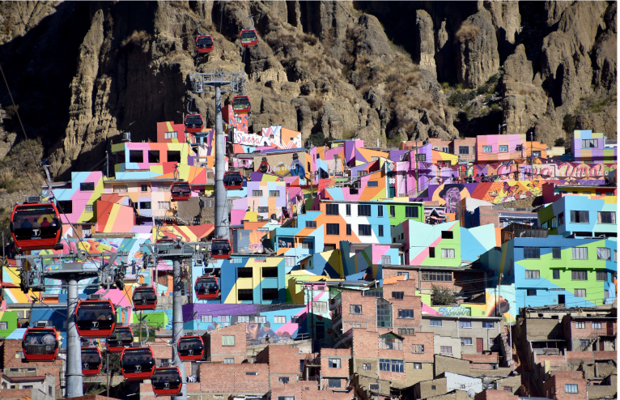

Introduction
Weber’s latest campaign to find the best cities on Earth aimed to showcase the "cities that best represent the achievements and aspirations of our global urban civilization," according to the New7Wonders website. The global competition began with more than 1200 nominees from 220 countries. That list was reduced to 77, since there was a limit of one city per country. Then the 77 remaining cities were narrowed down by a panel of experts headed by Federico Mayor, former director-general of UNESCO, to 28 suggestions.
Following the announcement of the 28 finalists, the winning seven cities were chosen by voters from around the world. The seven winning cities beat out finalists such as Istanbul, London, St. Petersburg, Seoul, Reykjavik, and Chicago. None of the world’s seven winning cities are in Europe or the US.
Below are the seven cities that have been named the new urban wonders of the world:
Durban

Country: South Africa
Population: 3,720,953
Area: 225.91 km2
Durban (Zulu: eThekwini, from itheku meaning 'city') is the third most populous city in South Africa after Johannesburg and Cape Town and the largest city in the South African province of KwaZulu-Natal. Durban forms part of the eThekwini Metropolitan Municipality, which includes neighboring towns and has a population of about 3.44 million, making the combined municipality one of the biggest cities on the Indian Ocean coast of the African continent.
Archaeological evidence from the Drakensberg mountains suggests that the Durban area has been inhabited by communities of hunter-gatherers since 100,000 BC. These people lived throughout the area of present-day KwaZulu-Natal until the expansion of Bantu farmers and pastoralists from the north saw their gradual displacement, incorporation or extermination. Little is known of the history of the first residents, as there is no written history of the area until it was sighted by Portuguese explorer Vasco da Gama, who sailed parallel to the KwaZulu-Natal coast at Christmastide in 1497 while searching for a route from Europe to India. He named the area "Natal", or Christmas in Portuguese.
Vigan
 Country: Philippines
Population: 53,879
Area: 25,12 km2
Vigan, officially the City of Vigan (Ilocano: Siudad ti Vigan; Tagalog: Lungsod ng Vigan; Spanish: Ciudad Fernandina de Vigan), is a 4th class component city and capital of the province of Ilocos Sur, Philippines. According to the 2015 census, it has a population of 53,879 people.
Located on the western coast of the large island of Luzon, facing the South China Sea, it is a UNESCO World Heritage Site and it is one of the few Spanish colonial towns left in the Philippines whose old structures have mostly remained intact, and it is well known for its sett pavements and a unique architecture of the Spanish Philippines colonial era which fuses Native Philippine and Oriental building designs and construction, with colonial Spanish architecture that is still abundant in the area, mainly the Bahay na Bato houses and an Earthquake Baroque church. Former Philippine president Elpidio Quirino, the sixth President of the Philippines, was born in Vigan, at the former location of the Provincial Jail (his father was a warden); he resided in the Syquia Mansion. The entire city of Vigan was later inscribed as a UNESCO World Heritage City after being declared as a UNESCO World Heritage Site. It is a member of the Organization of World Heritage Cities (OWHC).
Havana
 Country: Cuba
Population: 2,131,480
Area: 728.26 km 2
Havana (/həˈvænə/; Spanish: La Habana [la aˈβana] (About this soundlisten)) is the capital city, largest city, province, major port, and leading commercial center of Cuba. The city has a population of 2.1 million inhabitants, and it spans a total of 781.58 km2 (301.77 sq mi) – making it the largest city by area, the most populous city, and the fourth largest metropolitan area in the Caribbean region.
The city of Havana was founded by the Spanish in the 16th century and due to its strategic location it served as a springboard for the Spanish conquest of the Americas, becoming a stopping point for treasure-laden Spanish galleons returning to Spain. The King Philip II of Spain granted Havana the title of City in 1592. Walls as well as forts were built to protect the old city. The sinking of the U.S. battleship Maine in Havana's harbor in 1898 was the immediate cause of the Spanish–American War.
Kuala Lumpur
 Country: Malaysia
Population: 1,790,000
Area: 243 km 2
Kuala Lumpur (Malaysian pronunciation: [ˈkualə, -a ˈlumpo(r), -ʊ(r)]), officially the Federal Territory of Kuala Lumpur (Malay: Wilayah Persekutuan Kuala Lumpur) and colloquially referred to as KL, is a federal territory and the capital city of Malaysia. It is the largest city in Malaysia, covering an area of 243 km2 (94 sq mi) with an estimated population of 1.73 million as of 2016. Greater Kuala Lumpur, also known as the Klang Valley, is an urban agglomeration of 7.564 million people as of 2018. It is among the fastest growing metropolitan regions in Southeast Asia, in both population and economic development.
Kuala Lumpur is the cultural, financial and economic centre of Malaysia. It is also home to the Parliament of Malaysia and the official residence of the Yang di-Pertuan Agong, the Istana Negara. The city was once the seat of the executive and judicial branches of the federal government, but these were relocated to Putrajaya in early 1999. However, some sections of the political bodies still remain in Kuala Lumpur.
Beirut
 Country: Lebanon
Population: 361.366
Area: 19.8 km2
Beirut (/beɪˈruːt/ bay-ROOT; Arabic: بيروت, romanized: About this soundBayrūt; French: Beyrouth, pronounced [bɛʁut]) is the capital and largest city of Lebanon. As of 2007 it had an estimated population of slightly more than 1 million to 2.2 million as part of Greater Beirut, which makes it the third-largest city in the Levant region and the fifteenth-largest in the Arab world. On a peninsula at the midpoint of Lebanon's Mediterranean coast, Beirut is an important regional seaport.
It is one of the oldest cities in the world, having been inhabited for more than 5,000 years. The first historical mention of Beirut is found in the Amarna letters from the New Kingdom of Egypt, which date to the 15th century BC. Beirut is Lebanon's seat of government and plays a central role in the Lebanese economy, with most banks and corporations based in its Central District, Badaro, Rue Verdun, Hamra, Ryad el Soleh street, and Achrafieh. Following the destructive Lebanese Civil War, Beirut's cultural landscape underwent major reconstruction. Identified and graded for accountancy, advertising, banking, finance and law, Beirut is ranked as a Beta + World City by the Globalization and World Cities Research Network.
Doha
 Country: Qatar
Population: 2,382,000
Area: 132,000 km2
Doha (Arabic: الدوحة, ad-Dawḥa or ad-Dōḥa, pronounced [adˈdawħa]) is the capital and most populous city of the State of Qatar. It has a population of 956,460 (2015). The city is located on the coast of the Persian Gulf in the east of the country, North of Al Wakrah and South of Al Khor. It is Qatar's fastest growing city, with over 80% of the nation's population living in Doha or its surrounding suburbs, and it is the political and economic center of the country.
Doha was founded in the 1820s as an offshoot of Al Bidda. It was officially declared as the country's capital in 1971, when Qatar gained independence from being a British Protectorate. As the commercial capital of Qatar and one of the emergent financial centers in the Middle East, Doha is considered a beta-level global city by the Globalization and World Cities Research Network. Doha accommodates Education City, an area devoted to research and education; Hamad Medical City, an Hamad Medical Corporation administrative area of medical care which includes Hamad General Hospital, Heart Hospital, Women's Wellness and Research Center and Qatar Rehabilitation Institute as well as a number of specialty clinics and support infrastructure. Finally, it also includes Doha Sports City, or Aspire Zone, an international sports destination that includes Khalifa International Stadium, a FIFA WorldCup 2022 stadium, as well as Hamad Aquatic Center, and the Aspire Dome.
La Paz
 Country: Bolivia
Population: 766,468
Area: 472 km 2
La Paz (/lɑː ˈpɑːz/), officially known as Nuestra Señora de La Paz (Spanish pronunciation: [ˈnwestɾa seˈɲoɾa ðe la ˈpas]; English: "Our Lady of Peace"), also named Chuqi Yapu (Chuquiago) in Aymara, is the seat of government of the Plurinational State of Bolivia. With an estimated 816,044 residents as of 2020, La Paz is the third-most populous city in Bolivia. Its metropolitan area, which is formed by La Paz, El Alto, Achocalla, Viacha, and Mecapaca makes up the second most populous urban area in Bolivia, with a population of 1.8 million, after Santa Cruz de la Sierra with a population of 2.3 million. It is also the capital of the La Paz Department.
The city, located in west-central Bolivia 68 km (42 mi) southeast of Lake Titicaca, is set in a canyon created by the Choqueyapu River. It is located in a bowl-like depression, part of the Amazon basin, surrounded by the high mountains of the Altiplano. Overlooking the city is the towering, triple-peaked Illimani. Its peaks are always snow-covered and can be seen from many parts of the city. At an elevation of roughly 3,650 m (11,975 ft) above sea level, La Paz is the highest capital city in the world.Due to its altitude, La Paz has an unusual subtropical highland climate, with rainy summers and dry winters.